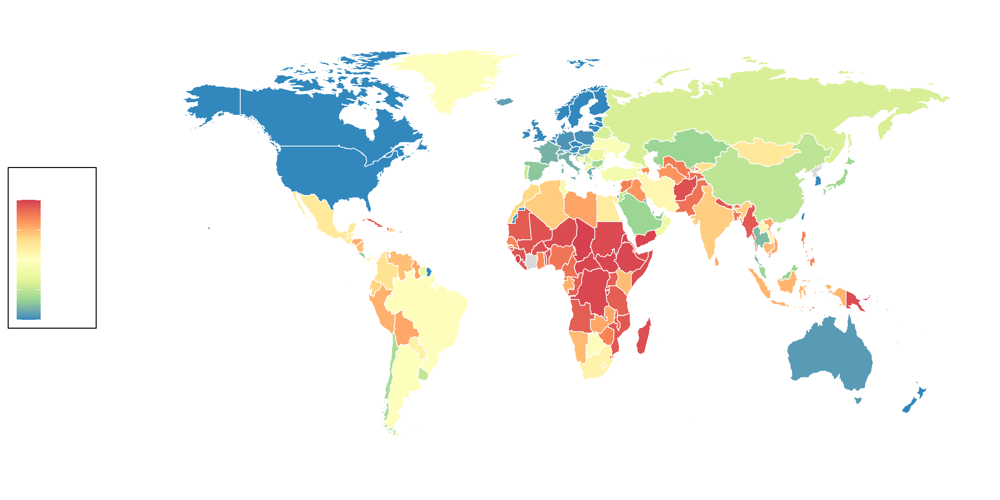
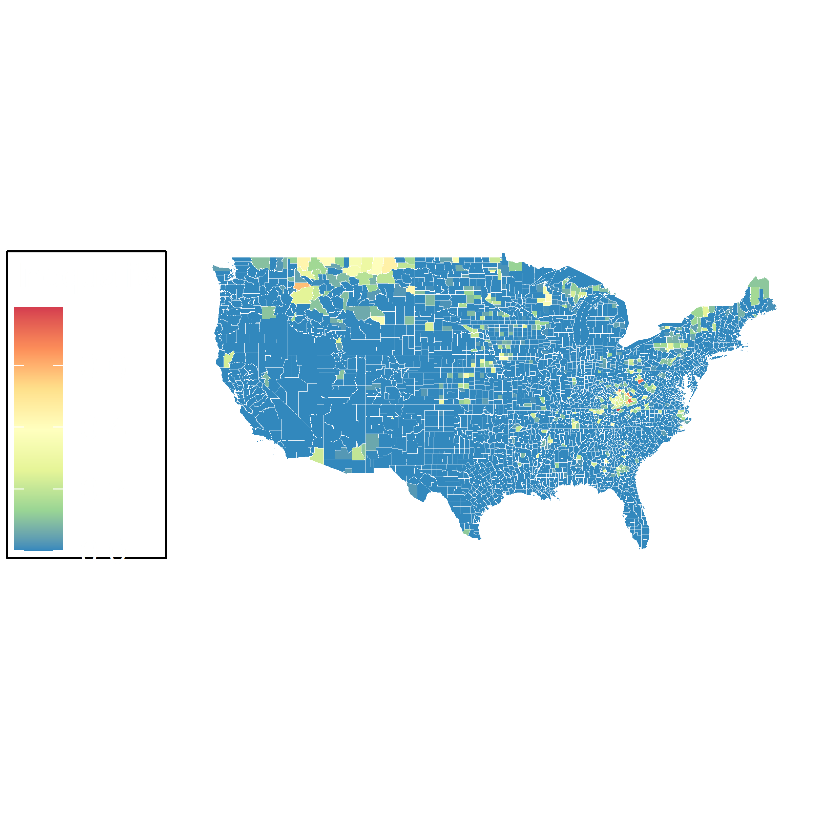
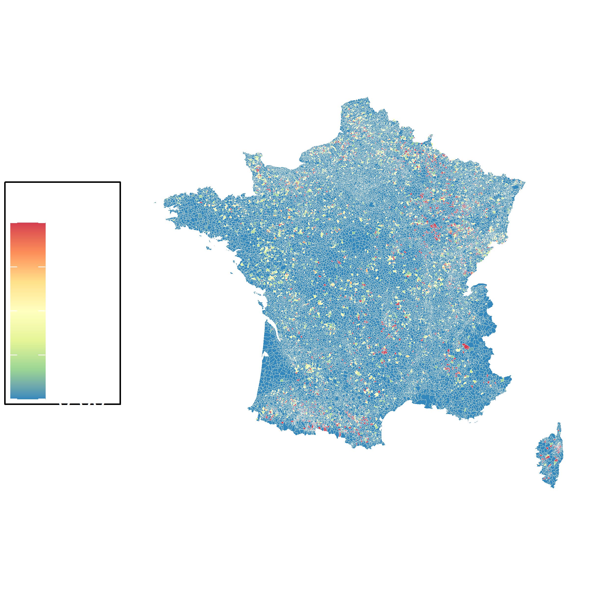
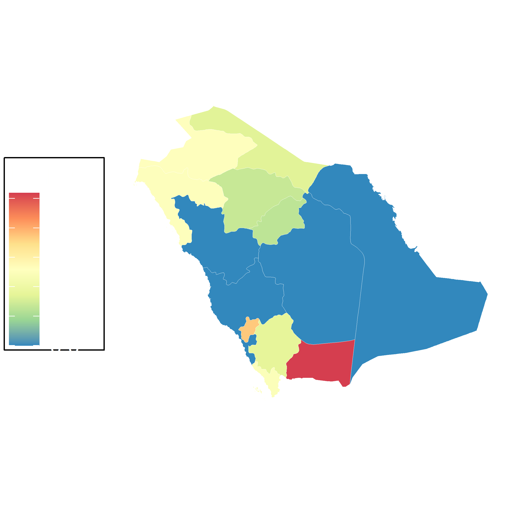
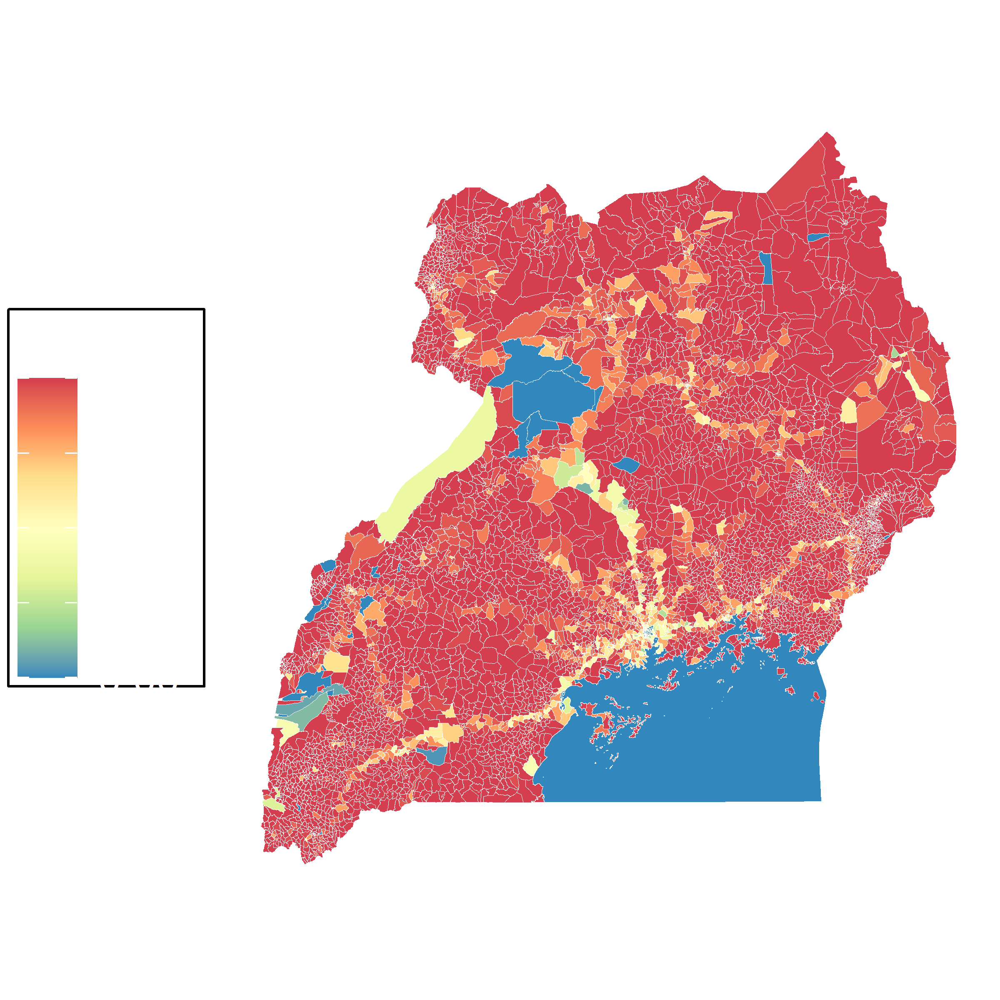

Measuring Digital Inequality
High-resolution population estimates across 147 countries and base station distributions all over the world reveal worldwide digital divide. 
We propose a fine-grained telecommunication service inequality index for any given geographical region, by using only the population and number of base station information.
Take the Republic of Tunisia as an example, the calculated region-wise inequality indexes are
displayed in the below figure. From this figure, one can clearly and vividly observe the inequality
index of each region across the whole country. Some regions such as those near the capital Tunis
have very low inequality, which indicates good connectivity. Efforts of mobile network operators
enrapt
in improving the connectivity of these regions are unavailing. On the contrary, they should be
attentive to regions with high inequality as few resource deployment are likely to bring huge
social and economic benefits.
Inequality Index visualization for Tunisia (Grid-wise).

Inequality Index visualization for USA (Grid-wise).

Inequality Index visualization for France (Grid-wise).

Inequality Index visualization for Saudi Arabia (Grid-wise).

Inequality Index visualization for Uganda (Grid-wise).
We validate the effectiveness of our inequality index by comparing it with a coarse-grained measurement, i.e., the GSMA mobile connectivity index. The derived Pearson correlation coefficient is 0.92, indicating a high correlation exists between our index and the GSMA index. The achieved statistical p value is 2.2e-16, which is small enough to reject the null hypothesis (without correlation) and embrace the alternative hypothesis (with true correlation). 
We can conclude that our index is consistent with coarse-grained measures, indicating the effectiveness of our proposed telecommunication service inequality. However, compared with the GSMA index that provides only country-wise statistics, our index is much more fine-grained and can provide inequality statistics for any given geographical segment.
Manuscript
Abstract: The digital divide restricting the access of people living in developing areas to the benefits of modern information and communications technologies has become a major challenge and research focus. To well understand and finally bridge the digital divide, we first need to discover a proper measure to characterize and quantify the telecommunication service imbalance. In this regard, we propose a fine-grained and easy-to-compute imbalance index, aiming to quantitatively link the relation among telecommunication service imbalance, telecommunication infrastructure, and demographic distribution. The mathematically elegant and generic form of the imbalance index allows consistent analyses for heterogeneous scenarios and can be easily tailored to incorporate different telecommunication policies and application scenarios. Based on this index, we also propose an infrastructure resource deployment strategy by minimizing the average imbalance index of any geographical segment. Experimental results verify the effectiveness of the proposed imbalance index by showing a high degree of correlation to existing congeneric but coarse-grained measures and the superiority of the infrastructure resource deployment strategy.
Code and Data
We used open available data from Facebook's High Resolution Population Density Maps and Demographic Estimates and the OpenCellid Project.
Data and code will be available at Github.
Countries by Digital Inequality
We rank countries by digital inequality where lower values correspond to a good balance between telecommunication infrastructure and population.
| Rank | Country | GSMA | Inclusive | Our |
|---|---|---|---|---|
| 1 | United States | 84.99388 | 85.4 | 0.00098 |
| 2 | Austria | 84.21427 | 81.4 | 0.04193 |
| 3 | Netherlands | 85.02611 | 79.9 | 0.04684 |
| 4 | United Kingdom | 85.86669 | 83.4 | 0.05947 |
| 5 | Hong Kong | 83.43147 | 81.6 | 0.08233 |
| 6 | Germany | 83.06297 | 80.7 | 0.08392 |
| 7 | Poland | 76.09167 | 82.3 | 0.08668 |
| 8 | Korea | 80.76833 | 84 | 0.09799 |
| 9 | Belgium | 82.56152 | 80 | 0.10479 |
| 10 | Singapore | 89.26637 | 81.5 | 0.10702 |
| 11 | Qatar | 75.71883 | 78.5 | 0.11521 |
| 12 | Australia | 90.50563 | 84.2 | 0.12818 |
| 13 | Kuwait | 70.35302 | 79.1 | 0.14952 |
| 14 | France | 80.70973 | 83.3 | 0.15918 |
| 15 | Italy | 76.14640 | 80 | 0.18269 |
| 16 | Greece | 70.55883 | 74.4 | 0.19205 |
| 17 | Spain | 80.26051 | 83.1 | 0.20543 |
| 18 | Hungary | 76.56934 | 77.3 | 0.20950 |
| 19 | Croatia | 75.29430 | 75.1 | 0.21576 |
| 20 | Bahrain | 71.22565 | 73.8 | 0.21643 |
| 21 | Slovakia | 74.75194 | 78.5 | 0.24357 |
| 22 | Thailand | 70.89730 | 74.8 | 0.25478 |
| 23 | Malaysia | 69.16652 | 75.4 | 0.30264 |
| 24 | Bulgaria | 70.37289 | 77.4 | 0.30822 |
| 25 | Japan | 83.39861 | 80.9 | 0.33725 |
| 26 | Chile | 73.23459 | 81.7 | 0.34264 |
| 27 | Saudi Arabia | 72.57571 | 73.3 | 0.34543 |
| 28 | Portugal | 76.54616 | 79.1 | 0.35998 |
| 29 | Romania | 72.44761 | 80.3 | 0.43519 |
| 30 | Jamaica | 59.20655 | 60.5 | 0.45040 |
| 31 | Oman | 68.73608 | 72 | 0.47438 |
| 32 | Turkey | 67.12601 | 71.7 | 0.49162 |
| 33 | Argentina | 67.16469 | 73.8 | 0.53419 |
| 34 | Botswana | 51.31293 | 52.5 | 0.53778 |
| 35 | Brazil | 63.51903 | 75.9 | 0.55695 |
| 36 | Iran | 59.66196 | 67.7 | 0.57304 |
| 37 | Laos | 45.68697 | 52.3 | 0.58244 |
| 38 | South Africa | 60.14176 | 76.2 | 0.58244 |
| 39 | Lebanon | 59.52624 | 64.4 | 0.58516 |
| 40 | Egypt | 55.70530 | 62 | 0.60044 |
| 41 | Paraguay | 64.01819 | 66.1 | 0.60555 |
| 42 | Guatemala | 55.61676 | 57.7 | 0.61470 |
| 43 | El Salvador | 55.35760 | 63.5 | 0.62655 |
| 44 | Mexico | 67.55758 | 70.3 | 0.63043 |
| 45 | Colombia | 63.74438 | 72 | 0.65499 |
| 46 | Morocco | 59.88687 | 65.5 | 0.68759 |
| 47 | Algeria | 53.23075 | 56.7 | 0.69467 |
| 48 | Venezuela | 57.43407 | 56.3 | 0.71103 |
| 49 | Namibia | 40.22530 | 49.5 | 0.71477 |
| 50 | Nicaragua | 52.51740 | 52 | 0.71757 |
| 51 | Sri Lanka | 56.54102 | 66.7 | 0.73463 |
| 52 | Zambia | 35.34367 | 45.4 | 0.73994 |
| 53 | Cambodia | 49.13647 | 57 | 0.74324 |
| 54 | Gabon | 48.70591 | 51.9 | 0.74956 |
| 55 | Honduras | 50.20736 | 51.2 | 0.75678 |
| 56 | Peru | 66.61678 | 67.9 | 0.76530 |
| 57 | Indonesia | 62.90039 | 66.4 | 0.76759 |
| 58 | Viet Nam | 64.60360 | 71 | 0.77669 |
| 59 | Azerbaijan | 58.28458 | 68.7 | 0.78952 |
| 60 | Ghana | 52.01176 | 57.2 | 0.79958 |
| 61 | Zimbabwe | 36.56517 | 36.8 | 0.80633 |
| 62 | Senegal | 41.30933 | 51.5 | 0.82746 |
| 63 | Philippines | 62.79242 | 63.1 | 0.85443 |
| 64 | Nigeria | 49.12154 | 61.2 | 0.85515 |
| 65 | Cameroon | 44.14501 | 49.3 | 0.86611 |
| 66 | Bangladesh | 46.47414 | 58.4 | 0.86757 |
| 67 | Myanmar | 52.58755 | 60.8 | 0.90185 |
| 68 | Tanzania | 40.10575 | 49.4 | 0.91605 |
| 69 | Uganda | 40.90499 | 49.6 | 0.92033 |
| 70 | Mozambique | 34.94512 | 41.1 | 0.92731 |
| 71 | Burkina Faso | 32.44149 | 34 | 0.93099 |
| 72 | Liberia | 34.42750 | 26.9 | 0.93866 |
| 73 | Papua New Guinea | 47.80867 | 42.7 | 0.95006 |
| 74 | Sudan | 35.12561 | 43.7 | 0.95316 |
| 75 | Madagascar | 31.32539 | 30.3 | 0.95924 |
| 76 | Rwanda | 42.78829 | 46.8 | 0.96173 |
| 77 | Ethiopia | 35.94241 | 41.8 | 0.96458 |
| 78 | Burundi | 26.16048 | 26.7 | 0.99511 |
Team
Check our Team